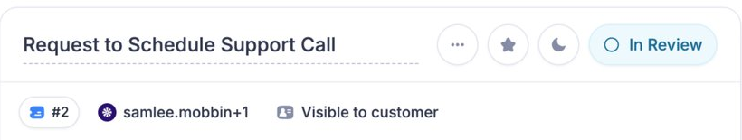
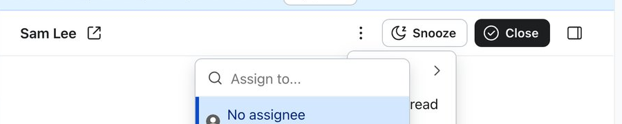
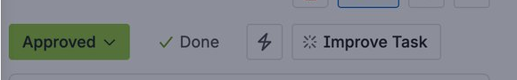
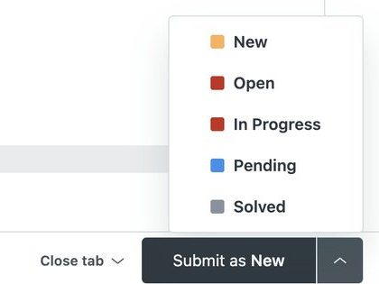
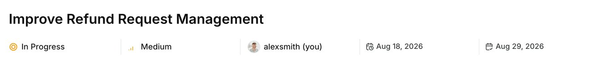
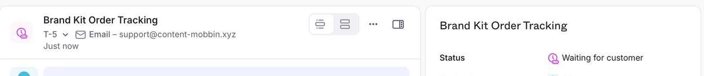
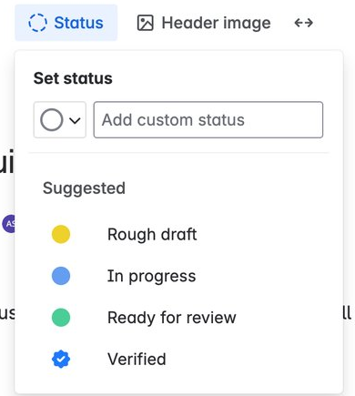

Real screens from Mobbin, cropped to the status control. Letter = closest option on the options board.
Status sits top-right of the ticket header as a light tinted chip with a status ring: "◌ In Review". No chevron, no split.

Header actions: "Snooze" as a white outlined button, then a dark primary "✓ Close". Status isn't a dropdown; the actions change it.

A solid coloured status chip with a chevron ("Approved ▾"), then a plain "Done" quick action beside it.

The real split button: "Submit as New | ▾". Left sends the reply, right picks the status (coloured squares). It sits on the composer, not the header.

Under the title, inline with other properties: status icon + "In Progress", no box at all.

Only a coloured status icon next to the thread title in the header; the full status ("Waiting for customer") lives in the right panel.

The status menu: a coloured dot per option, like our "Change status" menu.
